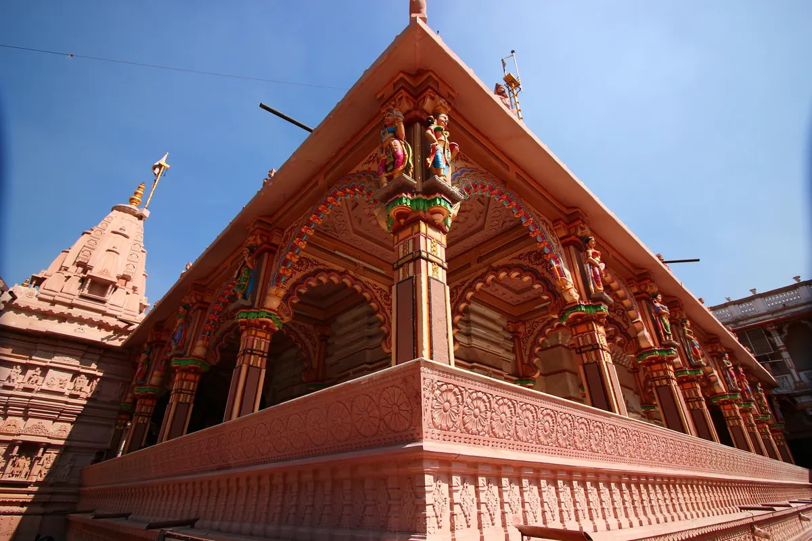

Swaminarayan Mandir Kalupur: A Respectful Architecture Guide

Begin with the temple’s documented place in the city
AMC Heritage City identifies the Kalupur temple as the oldest Swaminarayan temple and records that it was constructed in Ahmedabad in 1822. The official page describes it as an ensemble of buildings, which is the right way to approach it: not as one colourful façade, but as a living religious complex with connected spaces, thresholds and routines. Read the entrance and overall plan first, then move toward details only where visitors are permitted. The purpose of worship always comes before a creator’s shot list.
Read colour and carving as architecture
The temple’s painted surfaces, carved brackets, columns and figure work create a dense visual field. Instead of pointing the camera at every bright element, choose one architectural relationship: how a column supports an arch, how a balcony projects from a wall, or how painted ornament frames an opening. A wide view establishes scale; a medium view shows the bay; a close view records the craft. This three-step sequence communicates design without turning sacred imagery into disconnected decoration.
Follow the dress and conduct guidance
AMC’s heritage-walk guidance treats temples and mosques as active sacred places and asks visitors to cover shoulders, chest, navel and upper arms, with lower clothing extending below the knees. Even outside a booked walk, that standard is a useful minimum. Keep voices low, silence phone alerts and follow instructions from temple staff. Do not sit on thresholds, point feet toward shrines, interrupt a queue or enter an area marked for worshippers or authorised people.
Ask before photographing people or rituals
Permission to enter a complex is not automatic permission to film worship, residents, staff or devotees. Check current photography rules at the site and ask before making a person identifiable. Avoid flash, selfie sticks and equipment that obstructs circulation. If a ritual is underway, observe from the designated area and put the camera away when requested. A respectful story can use exterior and architectural frames with verified text; it does not need close footage of private devotion.
Use the heritage walk as context, not a guarantee
The municipal morning heritage walk begins at the Kalupur temple and connects it to the wider walled city. That route helps explain why the complex belongs within a network of pols, religious sites, streets and public spaces. However, schedules, fees, access and included stops may change. Check the official booking page before travelling and avoid copying operational details from an old post. If exploring independently, plan for narrow streets and arrive without blocking local movement.
Build a five-frame visual study
A concise sequence could include the entrance context, one complete pavilion or façade, a column-and-bracket relationship, a colour-and-carving detail and a final frame looking back toward the surrounding urban fabric. Label the footage date. Do not claim that a detail is original, restored or associated with a particular artisan unless a reliable source confirms it. Careful description—painted timber, carved stone, projecting balcony, repeated arch—is stronger than an unsupported historical label.
Let a living place remain living
The best conclusion is not a ranking of beauty but an invitation to observe how architecture supports an active community. Credit the official heritage source for historical facts, distinguish your visual interpretation from the record and encourage viewers to confirm current visitor arrangements. Beyond Soch can celebrate the temple’s craft while making boundaries visible: respectful clothing, consent, quiet observation and no interference with worship. That balance protects both the story and the place.